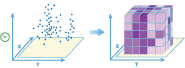

Big Data Analytics distributes the analytics work across your ArcGIS GeoAnalytics Server. This allows you to analyze more data faster, by harnessing the power of multiple machines. The following tools are currently available:
- Aggregate Points
- Join Features
- Reconstruct Tracks
- Summarize Attributes
- Summarize Within
- Find Similar Locations
- Calculate Density
- Find Hot Spots
- Create Buffers
- Copy to Data Store
Big Data Analytics focus on analyzing large data with a focus on both spatial and temporal patterns.
Summarize Data
The Summarize Data toolset contains tools that calculate total counts, lengths, areas, and basic descriptive statistics of features and their attributes within areas or near other features.
- Aggregate Points calculates statistics about points that fall within specified areas or bins.
- Join Features calculates statistics about features that exhibit a spatial, temporal or attribute relationship with another feature.
- Reconstruct Tracks calculates statistics about points or polygons that belong to the same track, and reconstructs inputs into tracks.
- Summarize Attributes calculates statistics about feature or tabular data that share attributes.
- Summarize Within calculates statistics for area features and attributes that overlap each other.
Aggregate Points |

|
Using a layer of point features and either a layer of area features or a distance used to calculate bins, this tool determines which points fall within each area and calculates statistics about all the points within each area. You may optionally apply time slicing to this tool.
For example:
- Given point locations of crime incidents, count the number of crimes per county or other administrative district.
- Find the highest and lowest monthly revenues for franchise locations using 100 km bins.
Join Features |

|
Using a layer of point, line or area features or a table and another of layer of point, line, area features or a table to join feature that exhibit a specified relationship. Spatial, temporal, and attribute relationships can be used to join features together, and optionally calculate summary statistics.
For example:
- Given point locations of crime incidents with a time, join the crim data to itself, specifying a spatial relationship of crimes within 1 kilometers of each other, and that occurred within 1 hour of each other, to determine if there are a sequence of crimes close to each other in space and time.
- Given a table of zip codes with demographic information and a area features representing residential building, join the demographic information to the residences, so that each residence now has the information.
Reconstruct Tracks |

|
Using either a layer of point features or polygon features that are time enabled, this tool determines which input features belong in a track, ordering the inputs sequentially in time. It then calculates statistics about all the input features within each track.
For example:
- Given point locations and time of hurricane measurements, calculate the mean wind speed, and max wind pressure of the hurricane.
- Find the highest and lowest monthly revenues for franchise locations using 100 km bins.
Summarize Attributes |
Using either feature or tabular data this tool summarizes statistics for field(s).
For example:
- Given locations of grocery stores with a field COMPANY_NAME, summarize the stores by the company name to determine statistics for each company.
- Given a table of grocery stores with a field COMPANY_NAME and COUNTY, summarize the stores by the company name and county to determine statistics for each company in each county.
Summarize Within |

|
Finds areas (and portions of areas) that overlap between two layers and calculates statistics about the overlap.
For example:
- Given a layer of watershed areas and a layer of land-use areas by land-use type, calculate total acreage of land-use type for each watershed.
- Given a layer of parcels in a county and a layer of city boundaries, summarize the average value of vacant parcels within each city.
Find Locations
These tools are used to identify areas that meet a number of different criteria you specify.
- Find Similar Locations finds locations most similar to one or more reference locations based on criteria you specify.
Find Similar Locations |

|
Based on criteria you specify, the Find Similar Locations tool measures the similarity of locations in your candidate search layer to one or more reference locations.
For example:
- Find the ten most similar stores by examining the number of employees and the annual sales.
- Find the 100 most similar cities by examining the relationship between population, annual growth, and tax revenue.
Analyze Patterns
These tools help you identify, quantify, and visualize spatial patterns in your data.
- Calculate Density takes known quantities of some phenomenon and spreads these quantities across the map.
- Create Space Time Cube summarizes a set of time enabled points into a netCDF structure by aggregating them into space time bins.
- Find Hot Spots identifies statistically significant clustering in the spatial pattern of your data.
Calculate Density |

|
The Calculate Density tool creates a density map from point features by spreading known quantities of some phenomenon (represented as attributes of the points) across the map. The result is a layer of areas representing the density.
For example:
- Calculating densities of hospitals within a county. The result layer will show areas with high and low accessibility to hospitals, and this information can be used to decide where new hospitals should be built.
- Identifying areas that are at high risk of forest fires based on historical locations of forest fires.
- Locating communities that are far from major highways in order to plan where new roads should be constructed.
Create Space Time Cube |
 |
At ArcGIS 10.5 Pre-release this Create Space Time Cube analysis is not available through the Portal Web Map
This tool summarizes a set of time enabled points into a netCDF structure by aggregating them into space time bins.
For example:
- Aggregate all crimes in a city into 1 km bins by month.
- Aggregate all 911 calls that occurred in a county over the last 50 years into 100 km bins, with annual temporal bins.
Find Hots Spots |

|
The Find Hot Spots tool will determine if there is any statistically significant clustering in the spatial pattern of your data.
- Are your points (crime incidents, trees, traffic accidents) really clustered? How can you be sure?
- Have you truly discovered a statistically significant hot spot (for spending, infant mortality, consistently high test scores) or would your map tell a different story if you changed the way it was symbolized?
Use Proximity
These tools help you answer one of the most common questions posed in spatial analysis: "What is near what?"
- Create Buffers creates areas of a specified distance from features.
Create Buffers |

|
A buffer is an area that covers a given distance from a point, line, or polygon feature.
For example:
- Using linear river features, buffer each river by 50 times the width of the river to determine a proposed riparian boundary.
- Given areas representing countries, buffer each country by 200 nautical miles to determine the maritime boundary.
Manage Data
These tools are used for the day-to-day management of geographic and tabular data.
- Copy to Data Store copies data to a your ArcGIS Data Store and creates a layer in your WebGIS.
Copy to Data Store |
Copies and input feature layer or table to an ArcGIS Data Store and create a layer in your Web GIS.
For example:
- Copy a collection of csvs in a big data file share to the spatiotemporal data store for visualization.
- Copy the features in the current map extent that are stored in the spatiotemporal data store to the relational data store.